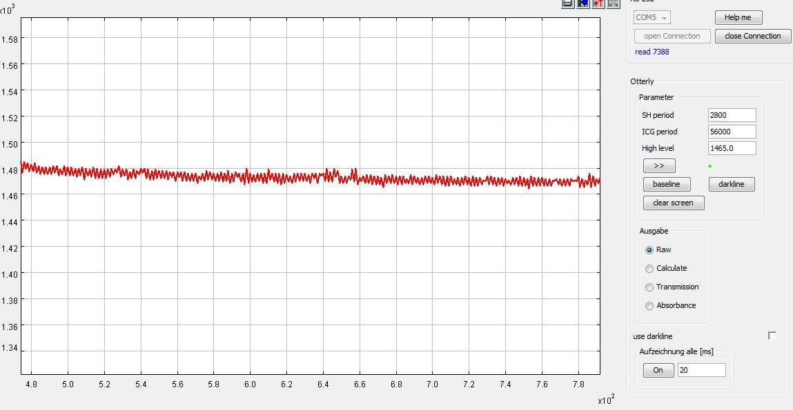

In Parameter you can set the SH and the ICG period. After editing please hit return.
The SH adjusts the sensitivity of the device. From experience the ICG should be a whole multiply of the SH-period. For example SH 280 | ICG 56000 or SH 1120 | ICG 56000.
For more informations copy and visit https://tcd1304.wordpress.com/timers/
This is a new feature the TCD1304FW (UART) averages 2-25 integrations. The program needs the version from sep. 10th 2017
My approach in handling the signal form the TCD is to subtract the dark spectra und divide it by the maximum signal.
The dark spectra is the spectrometers background noise when there is no light. It can be added to the system by pressing the darkline-button
In order to determine the High Level take a strong signal and/or high SH period. Select the maximum area with the mouse und read the value and edit High level.
The absorbance or transmittance spectra shows the light that is absorbt by a sample e.g. a dye. The baseline is the spectra of the light source, küvette und solvent.
Take a darkline first!